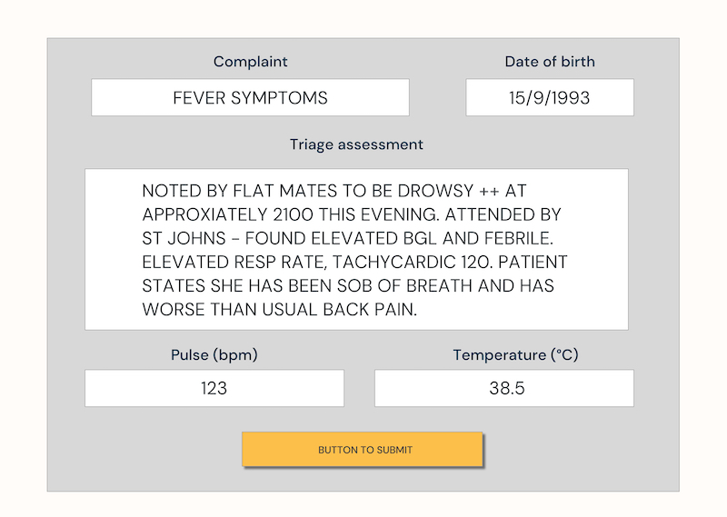

I founded STAN, a Supportive Triage Assistant which uses Machine Learning to help triage emergency department patients. To date, STAN has directly supported over 50,000 patients in New Zealand.
I'm progressively writing the STAN story up on this page. It's pretty light on info right now so if you're hungry for more STAN content check out: stantriage.com
~~~~~~~~~~~~~~~~~~~~~~~~~~~~~~~~~~~~~~~~~~~~~~~~
Triage
Triage is the process of prioritising emergency department patients. Emergency departments are unpredictable. Patients present with varying acuity, urgency and complexity. Demand for emergency resources often outweighs capacity meaning not all patients can be attended immediately.
So triage is super critical. But it's also hard!
Triage nurses make complex triage decisions in a short time period, and should avoid being influenced by environmental biases i.e capacity of the emergency department or the patients in the waiting room. Triage nurses operate unsupported; they conduct triage alone, are typically without electronic clinical support and are usually unable to ask for second opinions from their colleagues.
STAN
STAN supports triage nurses with machine learning and encoded clinical algorithm. For example, a nurse might triage the following patient:
After making a triage assessment, STAN would offer information to the nurse in real time, something like the below:
Does STAN positively impact triage?
We think so. Nurses regularly adjust their decision making due to STAN's recommendations (around 25% of the time when STAN recommends an opposing course of action).
In fact, a survey of 16 nurses using STAN at Nelson Marlborough District Health Board found that:
- 88% of nurses thought STAN improved triage consistency
- 100% of nurses thought STAN helped junior nurses triage more appropriately
- 88% of nurses thought STAN improved recognition and uptake of clinical pathways
- The majority of nurses thought STAN helped with Sepsis identification (88%), appropriate mental health triage (81%) and recognition of high risk symptoms (69%)
You can check out the rest of the survey results here
We are in the midst of publishing research to further showcase how STAN has helped support triage in New Zealand. So keep an eye out for this.
Is STAN a business or a research project?
We have decided not to pursue commercial use of STAN despite significant interest from around New Zealand. The simple fact is that (unfortunately) there are easier ways to make money than selling a niche decision support tool to the public health sector of a tiny island economy.
We have learnt a lot however, and do want to pay it forward. Keep an eye out for our research and get in touch if you are working on decision support tools and would like to chat: mackdelany [at] gmail.com